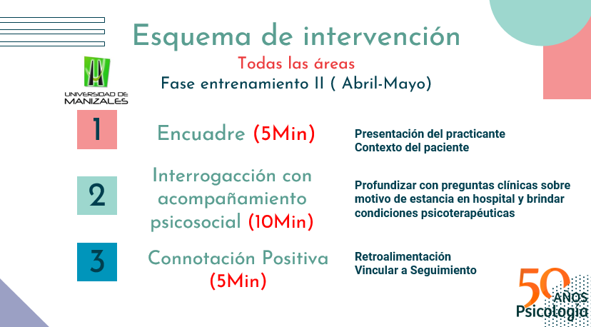

Guía para una evaluación integral del consultante con 5 micromódulos en 4 momentos.
Momentos del aprendizaje RRIR
Revisión
El primero es el esquema de la intervención que tiene 3 fases y una duración aproximada entre 20-30 minutos en acompañamiento psicosocial y entre 30-60 minutos en Psicoterapia
Registro
El segundo y tercero son
la caracterización clínica y sociodemográfica sirven para conocer la información contextual de los sistemas del consultante (Estadio Social).
Intervención
El cuarto es un microguión que sirve para la intervención mediante la observación directa y la entrevista clínica.
Retroalimentación
El quinto es la Connotación Positiva que es un feedback clínico, que sirve para retroalimentar lo trabajado durante la sesión, reforzar las potencialidades, fortalezas y oportunidades del consultante, y enganchar el seguimiento del proceso psicoterapéutico
Esta herramienta te será útil para el registro clínico de las intervenciones y puede usarse para las actividades de Psicoterapia y el Acompañamiento Psicosocial dentro de diversas áreas del hospital.
×
Fases de Intervención

Revisión
Se propone estructuralmente 3 fases para la intervención clínica como son el estadio social para el contexto y los sistemas, la intervención mediante la observación directa,
la entrevista y el registro clínico, y finalmente el Feedback
El objetivo principal de la intervención es mejorar el bienestar emocional y mental, fomentando cambios positivos y el desarrollo de habilidades de afrontamiento efectivas.
A través de una metodología colaborativa, terapeuta y consultante trabajan juntos para identificar y superar obstáculos, promoviendo una mejor calidad de vida y fortaleciendo la resiliencia ante futuras dificultades.
El presente esquema sirve para cualquier Enfoque Psicológico.
Adicionales: Al iniciar la Fase 1 es necesario en ese encuadre hacer una introducción muy breve con el consultante sobre la estructura de la sesión.
Motivo de consulta: Al iniciar la Fase 2 es necesario en esa indagación preguntar por el motivo de consulta (Ampliar esta parte con el supervisor).
Expectativas: Al terminar la Fase 2 o un poco antes, es necesario en esa Reorganización de la información preguntar al consultante sobre lo que espera lograr en el espacio/sesiones psicoterapéuticas y conectar esa respuesta con la respuesta sobre el motivo de consulta, por lo menos, en la primera sesión, para construir un plan de intervención coherente con la lógica en el objetivo terapéutico del consultante. En la posteridad, se vuelve a preguntar sobre dicha cuestión para centrarse en los objetivos terapéuticos en base al plan de trabajo propuesto.
Nota aclaratoria: Las temáticas abordadas son un referente, más es necesario la socialización y discusión con el supervisor clínico para una mayor comprensión, aplicación y efectividad en la intervención.
Este material ha sido desarrollado en conjunto con las Prácticas Clínicas de la Universidad de Manizales en Pereira
×
Micromódulos
Los Micromódulos están pensados como pequeños bloques de información y aprendizaje que se pueden completar en un corto periodo de tiempo.
Estos micromódulos son versátiles y flexibles, ideales para aquellos que buscan mejorar sus habilidades en poco tiempo y de manera específica.
Son cinco micromódulos, que pueden ser usados en cuatro momentos claves:
Al inicio de la evaluación
Durante la intervención
Al finalizar una sesión
Durante el seguimiento del consultante
×
Microguiones
Los Microguiones son herramientas útiles para los profesionales de la psicología, ya que les permiten realizar intervenciones más efectivas y personalizadas.
Estos microguiones están diseñados para ser flexibles y adaptarse a las necesidades específicas de cada consultante.
Se recomienda utilizar estos microguiones como referencia durante las sesiones para asegurarse de que se están abordando todos los aspectos importantes del proceso terapéutico.
×
Retroalimentación
La Retroalimentación es un componente esencial en el proceso terapéutico, ya que permite al consultante recibir comentarios constructivos sobre su progreso.
Esta retroalimentación debe ser clara, específica y orientada a fortalecer las áreas de mejora del consultante, al tiempo que se refuerzan sus logros y avances.
La retroalimentación efectiva contribuye a una mayor motivación y compromiso por parte del consultante hacia el proceso terapéutico.
×
Psicoterapia
La Psicoterapia es un proceso de intervención que tiene como objetivo principal el bienestar emocional y mental del consultante.
Este proceso es guiado por un profesional de la psicología, quien utiliza diversas técnicas y enfoques terapéuticos para ayudar al consultante a superar sus dificultades y mejorar su calidad de vida.
La psicoterapia es un espacio seguro y confidencial donde el consultante puede expresar sus pensamientos, emociones y preocupaciones, y recibir el apoyo necesario para enfrentar sus desafíos.
×
Seguimiento
El Seguimiento es una parte crucial del proceso terapéutico, ya que permite evaluar el progreso del consultante y ajustar el enfoque de la intervención según sea necesario.
El seguimiento regular ayuda a mantener el impulso del proceso terapéutico y garantiza que el consultante esté avanzando hacia sus objetivos.
Es recomendable programar sesiones de seguimiento periódicas para monitorear el progreso y hacer los ajustes necesarios en el plan de intervención.